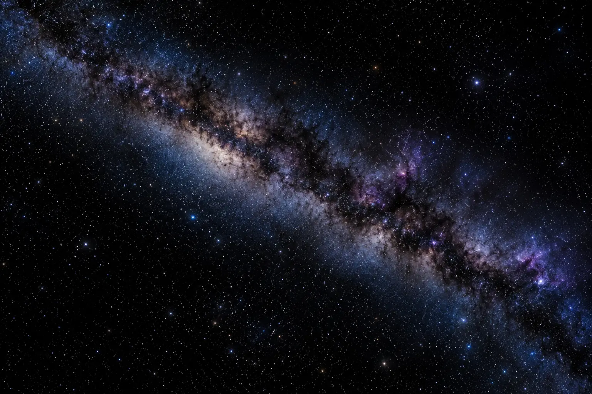
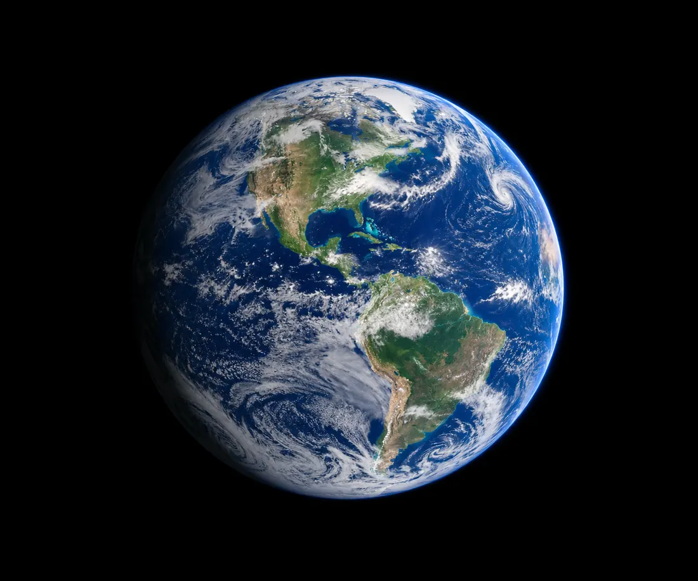
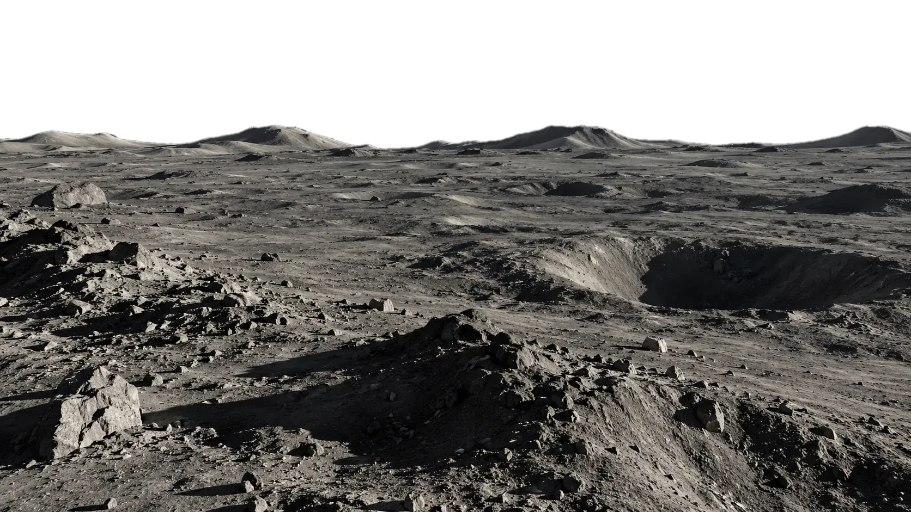
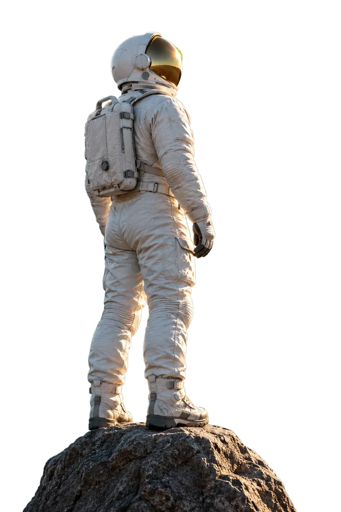
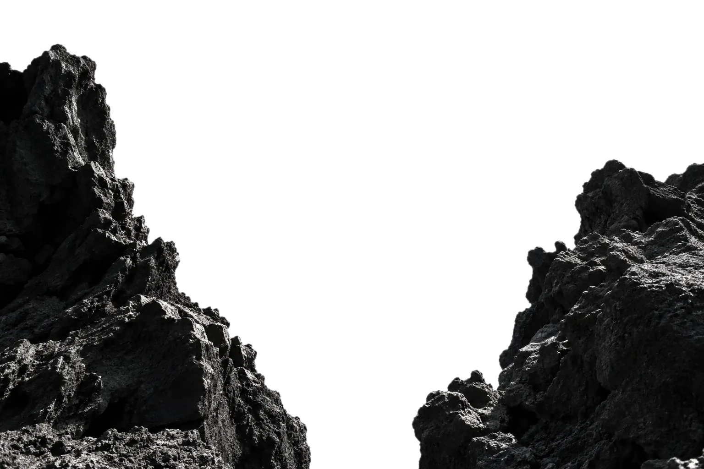
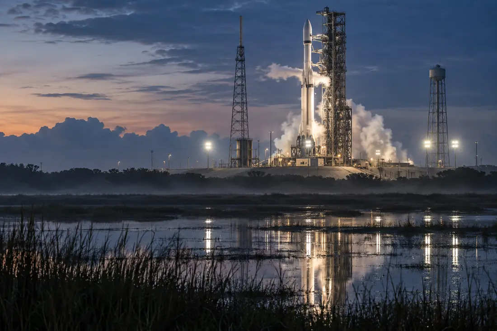
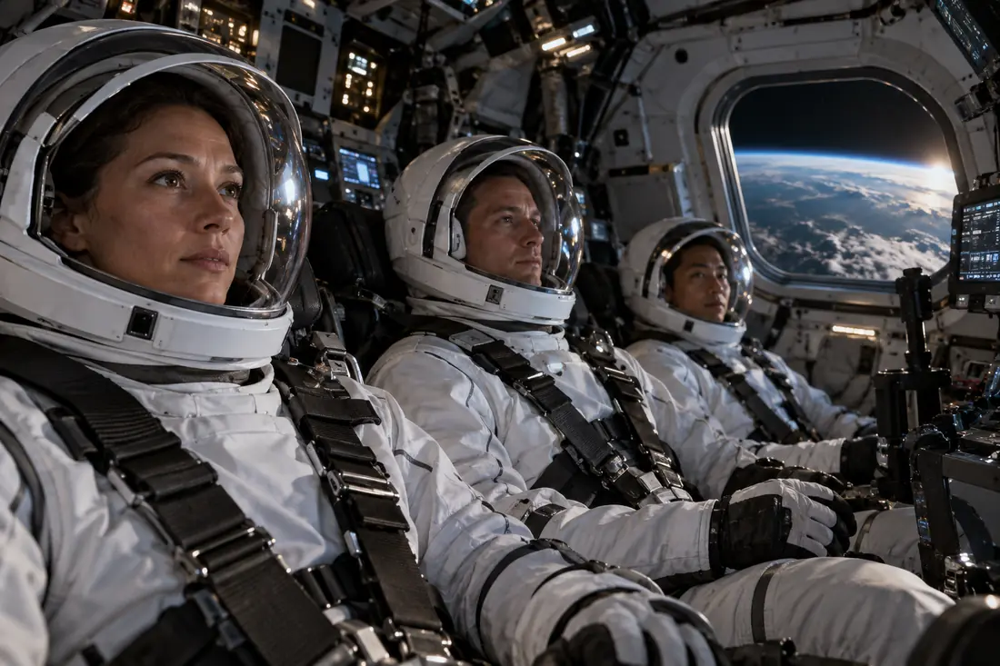
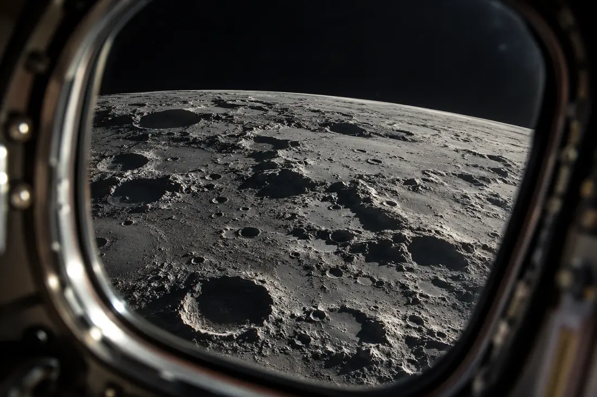
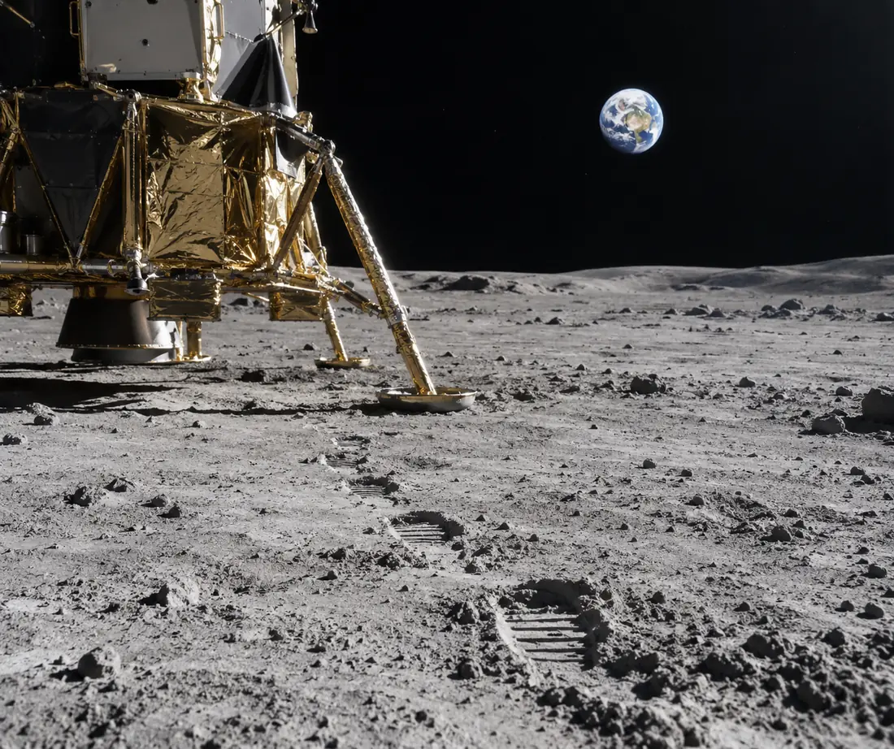

Six travellers. Three days out, three days back, and one morning when the Earth comes up over the horizon.




Six seats per flight. Eighteen months of training, included. Leave your email for the briefing pack.